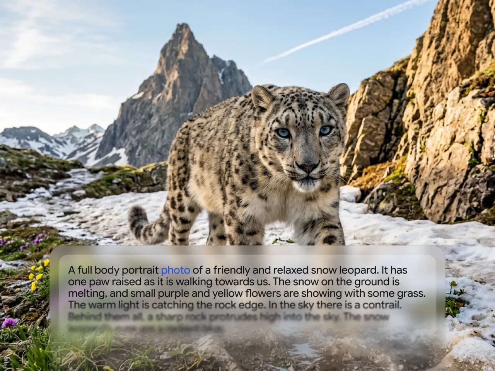
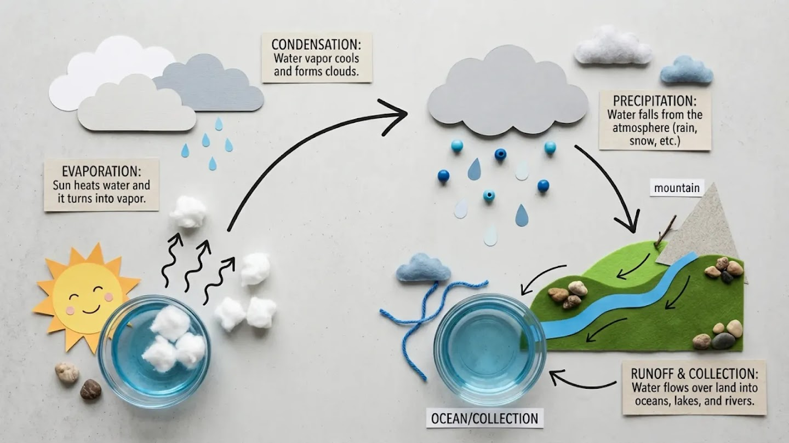

nanobanana 踩坑小记：看着简单，这几处我第一次用差点卸载
从提示词堆字数白费劲，到下载的图找不到，再到知识图出事实错误——四个真实踩坑点，症状、原因、解法一次说清。
从nanobanana官网下完APK装上就能用，界面干净到不像个能出图的东西。我第一反应是「这也太简单了吧」，然后就天真了——前后踩了四个挺具体的坑，有一次差点把应用卸了重装——装包直接从官方下载拿就行。写下来是怕你也在同样的地方耗一晚上。
提示词往 2000 字堆，出图越来越糊
症状：框右下角标了 0/2000，我理解成「写越多模型越理解」，于是一段往里塞场景、风格、光影、情绪、参考图描述、排除词……堆到 1500 多字，结果出图跟写 200 字没区别，甚至更模糊。
原因：模型确实吃上下文，但提示词框的 2000 字是硬上限不是推荐字数。五段结构写满也就一两百字，重点是说清而不是说长。堆字数反而让核心指令被淹没——模型看到的是一片形容词，抓不住你真正想要的是什么。
解法：写完之后读一遍，把重复形容同一维度的词删掉。比如「高清、高分辨率、像素级清晰、锐利」这四个留一个「高清」就够。控制在五段结构的框架内，每段说一件事。我后来养成的习惯是：生成前自己先读一遍，如果觉得「这他妈到底要画啥」，就重写。提示词怎么写才像样，nanobanana文档里有不少避坑经验。

下载的图去相册找不到
症状：点了「下载结果」，Toast 提示存成功了，但进相册按「最近」翻，翻半天没找到新图。我甚至怀疑是不是存进了一个我找不到的隐藏目录。
原因：这个不是 nanobanana 独占的坑——Android 的相册应用更新媒体库有延迟，加上部分手机厂商的相册会把某些应用生成的图片归到「其他相册」或者直接不显示。
解法：存完等一两分钟再查，别刚点完就刷新相册。真找不到的话，去文件管理器找 Pictures 目录里的 nanobanana 子文件夹，图肯定在那。实在嫌麻烦，每次出图直接点「我的素材」，应用内总有一份。
知识图出了个过时的日期，被同事当众指出
症状：让它画一张某项技术发展时间线，里面涉及一个 2023 年的事件，它给我写成了 2021 年。当时把这张图放周会上当资料，被同事指出来尴尬得一批。
原因：图像模型背后站着的是有知识截止时间的语言模型。涉及具体数字、日期、人名这类精确事实，它可能会「编」或者用旧版本的知识。这个坑不止知识图会踩——任何带文字的生成都可能出类似问题。
解法：事实类内容出图后必须核对一遍。特别是要对外展示的图，别偷懒。拿不准的宁可那个数据点留空，也别信模型瞎编的数字。我现在每次做知识图，先把里面涉及的每个年份和数字列出来，挨个过一遍权威来源。

一个流程图塞了十二个节点，文字全挤成一团
症状：想画一张复杂的业务流程图，把能想到的环节全列进去——十二个节点，每个节点还有子步骤。出图之后每个框里的文字只有蚂蚁那么大，根本看不清。
原因：模型会老老实实把你列的所有要素都塞进去，但它不会替你考虑画面容纳不下这么多内容。信息量超载时，要么字挤成一团，要么直接丢一部分节点。
解法：要素控制在一屏能舒服读完的程度，大概五到八个节点。超过了就拆成两张图，一张讲主流程、一张讲分支或细节。横构图对知识图友好，比例设成横版也能多装几个元素。
防坑清单
- 提示词控制在五段结构范围，别信 2000 字上限
- 下载的图找不到 → 等两分钟 + 查文件管理器，别急着重装应用
- 带事实内容的生成（日期、数字、人名），生成后必须核对权威来源
- 知识图要素 ≤8 个节点，多了拆图别硬塞
- 定期点「清除」重写提示词，别在旧句子上缝缝补补
知道这些坑之后，这软件其实相当省心。想留个备份或者翻到源码看一眼？相关资料同步放在 GitHub、Gitee、GitCode 三个仓库，国内网络访问也方便。